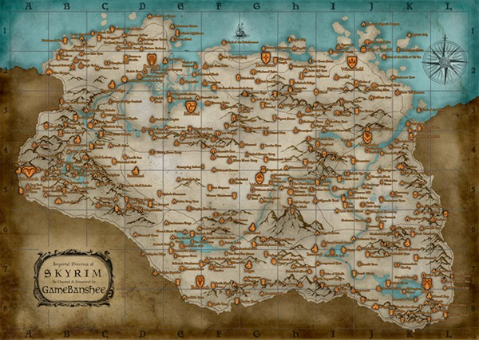

Mapa de Skyrim
Este é o mapa interactivo de Skyrim, onde você pode explorar as diferentes regiões e localizações do jogo.

O mapa de Skyrim é uma representação detalhada da província fictícia de Skyrim, localizada no continente de Tamriel. Ele inclui várias cidades, vilas, masmorras e pontos de interesse que os jogadores podem explorar durante o jogo. O mapa é uma ferramenta útil para os jogadores planejarem suas aventuras e descobrirem novos locais.
Você pode usar o mapa para localizar cidades como Whiterun, Solitude, Windhelm e Riften, bem como explorar áreas selvagens, montanhas e florestas. Além disso, o mapa também destaca locais importantes para missões e eventos do jogo.
Explore o mapa de Skyrim para descobrir todos os segredos e aventuras que esta incrível província tem a oferecer!